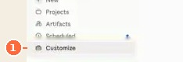
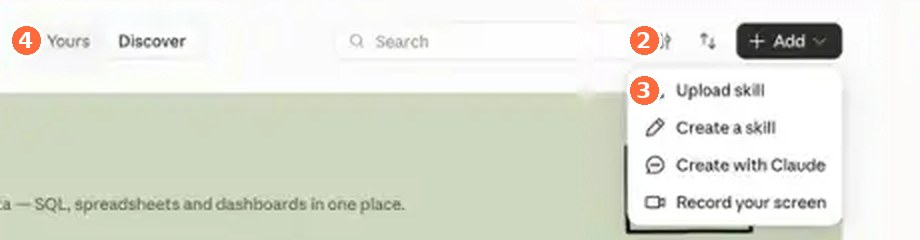
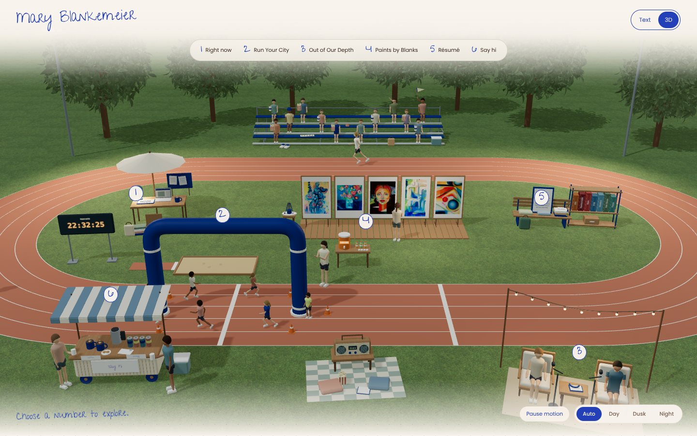

Claude This tutorial
- Where skills go
- Customize › + Add › Upload skill. Stays on in every chat
- Stanford account
- Free by request, link in 0.1
- Watch out
- Free personal plan can hit its limit mid-build
A voice skill so Claude writes like you. A design skill so it builds things that look like you. Your site is the test, because it needs both at once.
Skill a text file you upload to Claude once, so it remembers how you write or how you like things to look. Live link a web address anyone can open, instead of a file only you can see.
Open two now. Notice what you feel in the first three seconds. You'll steal one move from each in step 2.
This tutorial uses Claude. The same two skills work in ChatGPT and Gemini, step 0 shows how.
The pre-work email covered these. Did it? Tick the circles and go. If not, do it now, the tutorial waits.
Two spots you'll use all night. Find both now.


The + Add menu is open and you can see Upload skill. Nothing uploaded yet.
One note with your three samples and two links, the PDF and photo in Downloads.
Vercel is the free service that puts your file on the internet. Sign up with your email at vercel.com/signup and pick Hobby, which is the free plan. Have one, or want to do it in step 5? Skip.
Build tonight in the account you'll keep using. A skill is just a text file, so it moves anywhere.
Claude can't sound like you until it has read you. The form below collects the three ingredients and packs them into a skill.
Pick for whoever reads your site first. Changing later is one line in the skill.
Short, structured, confident. For recruiters and investors
Direct, a clear point of view, sounds like you talk. For most people.
Candid, loose, fragments allowed. For friends and side projects.
No preset. You describe it in 3 words and the samples do the rest.
Your samples from 0.2 are the assets. The vibe is your pick above. Icks are words you'd never say. Leave a field blank and the skill keeps a [bracket] there, which Claude will write around until you fill it in.
Talk instead of type. Dictating your samples field works too, and it sounds more like you than anything you'd write for a job.
New chat. Paste this, answer with real writing, then click Save skill. It's in Claude already, so jump to 4.
The first draft is never it. Run the loop from the slides on the one line that matters most, the first thing people read. Every test starts in a new chat, so the skill is doing the work, not the conversation.
I'm passionate about getting more people to the starting line — in sport, health care and AI.
+ Never: "passionate about"
+ Never: em dashes. Use -- instead
I'm focused on getting more people to the starting line, in sport, in health care, and in AI.
The file in your zip. Edit the top part any time, leave the locked part alone.
Loading voice…
Only the name and description at the top are required. The rest is how we wrote it tonight.
voice.zip is in Customize › Yours and on. Claude wrote an intro line you'd actually say, and the skill has one line you added after testing it.
Same recipe. Your photo and two sites are the assets, one color and a font pair are the vibe, and the icks are whatever makes you wince.
Describe it, then show it. Everyone's "warm" is different. Two links show Claude the fonts, spacing and tone your words can't. Do this first, it writes half your form for you.
Your vibe from step 1 picks the starter. Put what Claude just found into the form: one accent color (click a swatch, or paste the hex code, the # and six characters that name a color exactly), a font pair, and 3 words. Icks are whatever makes you wince.
Same chat. Paste this, then click Save skill and jump to 4.
Same clicks as step 1. The file is design.zip; in Yours it shows as design-warm, your vibe's version.
Just the top of your site, so you can judge the look without a whole page in the way. New chat, attach your photo with the + under the message box.
106 chapters, 3 countries in a big-number row. Photos with tape corners.
+ Never: big-number stats. Plain bullets
+ Never: tape or borders on photos
Plain bullets. A hand-drawn outline around every photo.
design.zip is in Yours and on. One section in your color and font, with your photo, and one new ick in the skill.
"Make me a personal website" gets you the average one. A good brief says who it's for, what they should do after, and where the facts come from. Your skills handle the rest.
Six blanks. They're the things only you know. Everything about how it sounds and looks is already in your skills.
Make it ask + plan before it builds. The brief ends by asking Claude for 3 questions, telling it to push back on résumé answers, then 3 directions. You catch the wrong direction in ten seconds, not after a whole page.
Claude asks 3 questions and may push back on an answer. Then A, B and C: the top of the page only, different structures. Pick one and say why. Plain words are enough.
Big photo, headline under it
Reads like a letter. Small photo.
Why: "it's a letter, not a résumé, and I like that the photo is small"
Timeline down the page
A, B and C in the chat with your name and real facts. You told Claude which one and why. Nothing built yet.
Look. Wince. Write it down. Every fix lands in a skill, so it's fixed for every deck and email after tonight too.
Same chat. One message, then wait a minute or two without sending another.
Mark it up, then say the fix. Screenshot the preview (Shift+Cmd+4 on a Mac), draw a circle on what's off (open the screenshot, Markup is the pen icon), and attach it with this. No time to draw? Just type the two things.
Fix the skill, not just the page. Looks go in the design skill, words go in the voice skill.
Until you'd send the link to the person you wrote the brief for. Twice is plenty. To prove a fix stuck: open Customize › Yours › design and find your new line, then new chat, same brief, see if the thing comes back.
A page with your color, your words, your photo and no fact you didn't give it. At least one new line in a skill that wasn't there 10 minutes ago.
Right now your site is a file only you can open. A host keeps it on a computer that's always on, so anyone with the link can see it.
In the chat where you built it.
Claude shows the file as a card with a Download button. Click it. The file lands in your Downloads folder as index.html. Keep that name, it's what websites call their front door.
vercel.com/drop. Sign in, or sign up free with your email and pick Hobby. You land on a page with a big dotted box.
Open your Downloads folder next to the browser and drag index.html into the dotted box. Or click the word file on that page and pick it. Name the project yourname-site, hit Deploy, wait about 30 seconds.
Vercel shows your new address, ending in .vercel.app. Open it on your phone. Then paste it below so it lands in the class gallery.
Lost on Vercel? Screenshot the page and ask Claude what to click next.
Each drop on Vercel makes a new link. GitHub keeps every version and one address, like version history in Google Docs.
yourname-site, Public. Create.index.html. Commit changes.yourname.com anywhere, then in Vercel: your project › Settings › Domains, add it, and copy the records it shows into your seller. Minutes, sometimes an hour.They're the whole thing. The two skills work on anything you make next.
A vercel.app link pasted above, open on your phone with your name on it, and your three files saved.
Your two skills are a first draft of you. These push them further: a site people remember, skills that work on things that aren't websites, and skills that keep improving without you.
A 3D scene of a place that says something about you, with one clickable object per section of your site. A track, a bookshelf, a kitchen, a trail, a city block. Ask for three scene ideas first, then pick. Simple shapes look intentional, realistic looks uncanny. Open it on your phone before you host it

Done looks like an Explore in 3D button on your site, and clicking an object shows that section
.Every memorable site has one small thing you'd recognize anywhere. Pick yours, something you'd repeat on every page, deck and email, and make it a non-negotiable in the design skill
Examplesa hand-drawn outline around every photo. A highlighter stroke under each heading. A tiny mark with your initials in the corner. One odd color nobody else uses
Done looks like the move on your site and written into the skill
.Five samples is a sketch. Connect Gmail under Settings › Connectors and let Claude read 50 sent emails. It will find patterns you don't know you have: how you open, how long you run, the word you overuse
Example~140 sent emails, ~120 Slacks, 17,736 texts went into one voice skill. It found "thank you so big" and kept it ungrammatical on purpose
Done looks like a Non-negotiables section in your skill with phrases only you say, spelled your way
.A design skill that only knows websites is half a skill. Teach it slides: what a title slide looks like, how many words per slide, what never goes on one. Then rebuild the title slide and one content slide of a deck you've actually presented
Done looks like a Slides section in your design skill and two slides that look like your site's cousin
.Your two skills are yours. A club or company needs one brand skill where voice and design travel together, because every flyer, post and email needs both. Build it from the organization's assets, then its homepage
Exampleone brand skill rebuilt a 106-chapter nonprofit's site, a volunteer flyer, an Instagram post and a donor email. Same file every time
Done looks like a brand skill with Voice and Design sections in one file, and a homepage built from it
.Every time you correct Claude, that correction should land in a skill. Nobody remembers to do it. So a scheduled task reads the day's chats, finds where you corrected it, and proposes skill edits. You approve in the morning, one tap each
Done looks like a task on the Scheduled tab that runs tonight. Tomorrow, read what it proposes
.Friends get the fun version, interviews get the buttoned-up one, same skill.
An email, a Slack and a text shouldn't run the same length.
Three questions and a plan before Claude makes anything long, every time.
When a page has words, the design skill calls the voice skill.
For applications and essays. Claude asks five questions first, then drafts from your answers. No blank page.
Keep fixing the skills every time you correct Claude. That's how they get good.
Use it on your next cover letter, cold email or LinkedIn post
Use it on your next deck, one-pager or event page
Send the link to one person tonight
Fill it out + the speaker's skills & website code are yours.
A question for the room? Post it on PollEv
See everyone's site in the class gallery. stays open, and the one thing to set up tonight at home is nightly skill fixes, challenge 7 in there.
Created by Mary Blankemeier for AI@GSB